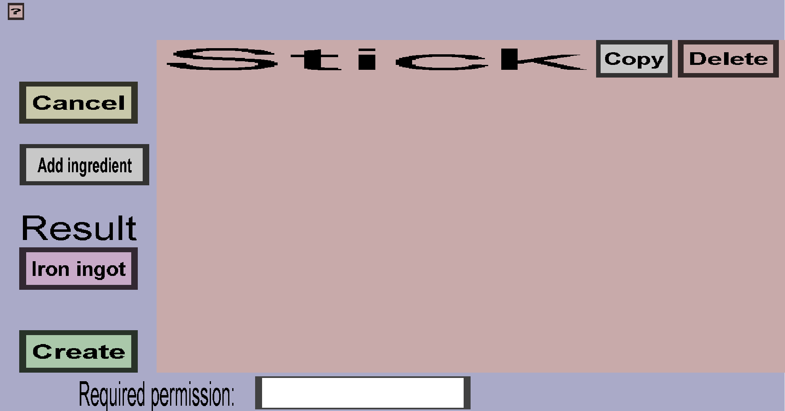

The create shapeless recipe menu is the menu from which you can add, edit and delete crafting ingredients for a shapeless recipe. It should look like this:
For more information about a shapeless recipe, visit the respective page on the Minecraft Wiki The menu consists out of the of three buttons, the 'Add ingredient' button, the 'Result' button and the 'Cancel button'.
The 'Cancel' button will take you back to the Recipe Menu, disregarding the changes you made. There is no way to recover any changes you have made after you pressed the 'Cancel' button.
Underneath the result text is a purple/pinkish button, that when clicked opens up a submenu where you can select which type of item will be crafted with the current crafting recipe. For more information, visit this page.
The 'Add ingredient' button opens up a submenu where you can select which type of item will be part of the crafting recipe. For more information, visit this page. After adding an ingredient, the page should look like this:
If you are adding a lot of crafting recipes, you might note that this requires a lot of time and clicks. To speed this up, you can use the hotkeys c, v, or d while hovering your mouse over the 'Add ingredient' button. These are for Custom item, Vanilla item and vanilla item with Datavalue respectively.

The 'Apply' button does the same thing as the 'Cancel' button except that it does remember the changes you have made. Do note that the changes are not saved physically until you have pressed the 'Save' button in the Item Set Edit Menu.
The 'Ingredient' button is the button that contains the name of the item that is part of this crafting recipe. There can be multiple or none of these buttons on the same page. Clicking on this button opens up a submenu where you can change which type of item will be part of the crafting recipe. For more information, visit this page.
Pressing this red x will delete the ingredient from the crafting recipe. NOTE: At the time of writing this there is a bug where the space used by the ingredient button and the red X remains empty. This is currently being looked at. Please be patient, it will be fixed soonTM.